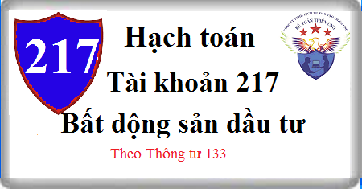

Hướng dẫn Cách hạch toán Tài khoản 217 theo Thông tư 133 Cách hạch toán khi mua, bán thanh lý, cho thuê Bất động sản đầu tư, xây dựng Bất động sản đầu tư
1. Nguyên tắc kế toán Tài khoản 217 - Bất động sản đầu tư
1.1. Tài khoản này dùng để phản ánh số hiện có và tình hình biến động tăng, giảm bất động sản đầu tư (BĐSĐT) của doanh nghiệp theo nguyên giá, được theo dõi chi tiết theo từng đối tượng tương tự như TSCĐ. BĐSĐT gồm: Quyền sử dụng đất, nhà hoặc một phần của nhà hoặc cả nhà và đất, cơ sở hạ tầng do người chủ sở hữu hoặc người đi thuê tài sản theo hợp đồng thuê tài chính nắm giữ nhằm mục đích thu lợi từ việc cho thuê hoặc chờ tăng giá mà không phải để:
- Sử dụng trong sản xuất, cung cấp hàng hóa, dịch vụ hoặc sử dụng cho các mục đích quản lý; hoặc
- Bán trong kỳ sản xuất, kinh doanh thông thường.
1.2. Tài khoản này dùng để phản ánh giá trị BĐS đủ tiêu chuẩn ghi nhận là BĐSĐT. Không phản ánh vào tài khoản này giá trị bất động sản mua về để bán trong kỳ hoạt động kinh doanh bình thường hoặc xây dựng để bán trong tương lai gần, bất động sản chủ sở hữu sử dụng, bất động sản trong quá trình xây dựng chưa hoàn thành với mục đích để sử dụng trong tương lai dưới dạng BĐSĐT.
Bất động sản đầu tư được ghi nhận là tài sản phải thỏa mãn đồng thời hai điều kiện sau:
- Chắc chắn thu được lợi ích kinh tế trong tương lai;
- Nguyên giá phải được xác định một cách đáng tin cậy.
1.3. Bất động sản đầu tư được ghi nhận trên tài khoản này theo nguyên giá. Nguyên giá của BĐSĐT là toàn bộ các chi phí (tiền hoặc tương đương tiền) mà doanh nghiệp bỏ ra hoặc giá trị hợp lý của các khoản khác đưa đi trao đổi để có được BĐSĐT tính đến thời điểm mua hoặc xây dựng hoàn thành BĐSĐT đó.
- Tùy thuộc vào từng trường hợp, nguyên giá của BĐSĐT được xác định như sau:
+ Nguyên giá của BĐSĐT được mua bao gồm giá mua và các chi phí liên quan trực tiếp đến việc mua, như: Phí dịch vụ tư vấn, lệ phí trước bạ và chi phí giao dịch liên quan khác,...
+ Trường hợp mua BĐSĐT thanh toán theo phương thức trả chậm, nguyên giá của BĐSĐT được phản ánh theo giá mua trả tiền ngay tại thời điểm mua. Khoản chênh lệch giữa giá mua trả chậm và giá mua trả tiền ngay được hạch toán vào chi phí tài chính theo kỳ hạn thanh toán, trừ khi số chênh lệch đó được tính vào nguyên giá BĐSĐT;
+ Nguyên giá của BĐSĐT tự xây dựng là giá thành thực tế và các chi phí liên quan trực tiếp của BĐSĐT tính đến ngày hoàn thành công việc xây dựng;
- Các chi phí sau không được tính vào nguyên giá của BĐSĐT:
+ Chi phí phát sinh ban đầu (trừ trường hợp các chi phí này là cần thiết để đưa BĐSĐT vào trạng thái sẵn sàng sử dụng);
+ Các chi phí khi mới đưa BĐSĐT vào hoạt động lần đầu trước khi BĐSĐT đạt tới trạng thái hoạt động bình thường theo dự kiến.
1.4. Các chi phí liên quan đến BĐSĐT phát sinh sau ghi nhận ban đầu phải được ghi nhận là chi phí sản xuất, kinh doanh trong kỳ, trừ khi chi phí này có khả năng chắc chắn làm cho BĐSĐT tạo ra lợi ích kinh tế trong tương lai nhiều hơn mức hoạt động được đánh giá ban đầu thì được ghi tăng nguyên giá BĐSĐT.
1.5. Trong quá trình cho thuê hoạt động phải tiến hành trích khấu hao BĐSĐT và ghi nhận vào giá vốn hàng bán trong kỳ (kể cả trong thời gian ngừng cho thuê). Doanh nghiệp có thể dựa vào các bất động sản chủ sở hữu sử dụng cùng loại để ước tính thời gian trích khấu hao và xác định phương pháp khấu hao của BĐSĐT.
- Trường hợp doanh nghiệp ghi nhận doanh thu đối với toàn bộ số tiền nhận trước từ việc cho thuê BĐSĐT, kế toán phải ước tính đầy đủ giá vốn tương ứng với doanh thu được ghi nhận (bao gồm cả số khấu hao được tính trước).
- Giá vốn của BĐSĐT cho thuê bao gồm: Chi phí khấu hao BĐSĐT và các chi phí liên quan trực tiếp khác tới việc cho thuê, như: Chi phí dịch vụ mua ngoài, chi phí tiền lương nhân viên trực tiếp quản lý bất động sản cho thuê, chi phí khấu hao các công trình phụ trợ phục vụ việc cho thuê BĐSĐT.
1.6. Doanh nghiệp không trích khấu hao đối với BĐSĐT nắm giữ chờ tăng giá. Trường hợp có bằng chứng chắc chắn cho thấy BĐSĐT bị giảm giá so với giá thị trường và khoản giảm giá được xác định một cách đáng tin cậy thì doanh nghiệp được đánh giá giảm nguyên giá BĐSĐT và ghi nhận khoản tổn thất vào giá vốn hàng bán (tương tự như việc lập dự phòng đối với hàng hóa bất động sản).
1.7. Đối với những BĐSĐT được mua vào nhưng phải tiến hành xây dựng, cải tạo, nâng cấp trước khi sử dụng cho mục đích đầu tư thì giá trị bất động sản, chi phí mua sắm và chi phí cho quá trình xây dựng, cải tạo, nâng cấp BĐSĐT được phản ánh trên TK 241 “Xây dựng cơ bản dở dang”. Khi quá trình xây dựng, cải tạo, nâng cấp hoàn thành phải xác định nguyên giá BĐSĐT hoàn thành để kết chuyển vào TK 217 “Bất động sản đầu tư”.
1.8. Việc chuyển từ bất động sản chủ sở hữu sử dụng thành BĐSĐT hoặc từ BĐSĐT sang bất động sản chủ sở hữu sử dụng hay hàng tồn kho chỉ khi có sự thay đổi về mục đích sử dụng như các trường hợp sau:
- BĐSĐT chuyển thành bất động sản chủ sở hữu sử dụng khi chủ sở hữu bắt đầu sử dụng tài sản này;
- BĐSĐT chuyển thành hàng tồn kho khi chủ sở hữu bắt đầu triển khai cho mục đích bán;
- Bất động sản chủ sở hữu sử dụng chuyển thành BĐSĐT khi chủ sở hữu kết thúc sử dụng tài sản đó và khi bên khác thuê hoạt động;
- Hàng tồn kho chuyển thành BĐSĐT khi chủ sở hữu bắt đầu cho bên khác thuê hoạt động;
- Bất động sản xây dựng chuyển thành BĐSĐT khi kết thúc giai đoạn xây dựng, bàn giao đưa vào đầu tư.
Việc chuyển đổi mục đích sử dụng giữa BĐSĐT với bất động sản chủ sở hữu sử dụng hoặc hàng tồn kho không làm thay đổi giá trị ghi sổ của tài sản được chuyển đổi và không làm thay đổi nguyên giá của bất động sản trong việc xác định giá trị hay để lập Báo cáo tài chính.
1.9. Khi doanh nghiệp quyết định bán một BĐSĐT mà không có giai đoạn sửa chữa, cải tạo nâng cấp thì doanh nghiệp vẫn tiếp tục ghi nhận là BĐSĐT trên TK 217 "Bất động sản đầu tư" cho đến khi BĐSĐT đó được bán mà không chuyển thành hàng tồn kho.
1.10. Doanh thu từ việc bán BĐSĐT được ghi nhận là giá bán chưa có thuế GTGT (đối với trường hợp doanh nghiệp nộp thuế GTGT tính theo phương pháp khấu trừ) hoặc tổng giá thanh toán (đối với trường hợp doanh nghiệp nộp thuế GTGT theo phương pháp trực tiếp). Trường hợp bán theo phương thức trả chậm thì doanh thu được xác định ban đầu theo giá bán trả tiền ngay. Khoản chênh lệch giữa tổng số tiền phải thanh toán và giá bán trả tiền ngay được ghi nhận là doanh thu tiền lãi chưa thực hiện.
1.11. Ghi giảm BĐSĐT trong các trường hợp:
- Chuyển đổi mục đích sử dụng từ BĐSĐT sang hàng tồn kho hoặc bất động sản chủ sở hữu sử dụng;
- Bán, thanh lý BĐSĐT;
- Hết thời hạn thuê tài chính trả lại BĐSĐT cho bên cho thuê.
1.12. Doanh nghiệp xây dựng danh mục BĐSĐT nắm giữ cho thuê hoặc chờ tăng giá và thực hiện chính sách khấu hao hoặc xác định tổn thất một cách nhất quán trong năm tài chính.
2. Kết cấu và nội dung Tài khoản 217 - Bất động sản đầu tư
Bên Nợ: Nguyên giá BĐSĐT tăng trong kỳ.
Bên Có: Nguyên giá BĐSĐT giảm trong kỳ.
Số dư bên Nợ: Nguyên giá BĐSĐT hiện có cuối kỳ.
3. Cách hạch toán Bất động sản đầu tư Tài khoản 217
3.1. Khi mua Bất động sản đầu tư:
a) Trường hợp mua trả tiền ngay, nếu thuế GTGT đầu vào được khấu trừ:
Nợ TK 217 - Bất động sản đầu tư
Nợ TK 133 Thuế GTGT được khấu trừ (1332)
Có các Tài khoản 111, 112.
Trường hợp thuế GTGT đầu vào không được khấu trừ thì nguyên giá BĐSĐT bao gồm cả thuế GTGT.
b) Mua BĐSĐT theo phương thức trả chậm:
- Ghi nhận BĐSĐT được mua, nếu thuế GTGT đầu vào được pháp khấu trừ, ghi:
Nợ TK 217 - BĐS đầu tư (theo giá mua trả tiền ngay chưa có thuế GTGT)
Nợ TK 242 - Chi phí trả trước (phần lãi trả chậm tính bằng số chênh lệch giữa Tổng số tiền phải thanh toán trừ (-) Giá mua trả tiền ngay và thuế GTGT đầu vào)
Nợ TK 133 - Thuế GTGT được khấu trừ (1332)
Có Tài khoản 331 Phải trả người bán
Trường hợp thuế GTGT đầu vào không được khấu trừ thì nguyên giá BĐSĐT bao gồm cả thuế GTGT.
- Hàng kỳ, tính và phân bổ số lãi phải trả về việc mua BĐSĐT theo phương thức trả chậm, ghi:
Nợ TK 635 - Chi phí tài chính
Có TK 242 Chi phí trả trước
- Khi thanh toán tiền cho người bán, ghi:
Nợ TK 331 - Phải trả cho người bán
Có TK 515 - Doanh thu hoạt động tài chính (phần chiết khấu thanh toán được hưởng do thanh toán trước thời hạn - Nếu có)
Có các Tài khoản 112, 111, …
3.2. Trường hợp BĐS đầu tư hình thành do xây dựng cơ bản hoàn thành bàn giao:
- Khi phát sinh chi phí xây dựng BĐSĐT, căn cứ vào các tài liệu và chứng từ có liên quan, kế toán tập hợp chi phí vào bên Nợ TK 241 “XDCB dở dang” (tương tự như xây dựng TSCĐ hữu hình, xem giải thích tài khoản 211 “TSCĐ hữu hình”).
Chi tiết xem tại đây: Tải khoản 211 TSCĐ hữu hình
- Khi giai đoạn đầu tư XDCB hoàn thành bàn giao chuyển tài sản đầu tư thành BĐS đầu tư, kế toán căn cứ vào hồ sơ bàn giao, ghi:
Nợ TK 217 - Bất động sản đầu tư
Có TK 241 Xây dựng cơ bản dở dang.
3.3. Khi chuyển từ bất động sản chủ sở hữu sử dụng hoặc hàng tồn kho thành BĐSĐT, căn cứ vào hồ sơ chuyển đổi mục đích sử dụng, ghi:
a) Trường hợp chuyển đổi TSCĐ thành BĐSĐT:
Nợ TK 217 - Bất động sản đầu tư
Có TK 211 - TSCĐ
Đồng thời kết chuyển số hao mòn luỹ kế, ghi:
Nợ các TK 2141, 2143
Có TK 2147 - Hao mòn BĐSĐT
b) Khi chuyển từ hàng tồn kho thành BĐSĐT, căn cứ vào hồ sơ chuyển đổi mục đích sử dụng, ghi:
Nợ TK 217 - Bất động sản đầu tư
Có các Tài khoản 156 Hàng hóa
3.4. Khi phát sinh chi phí sau ghi nhận ban đầu của BĐSĐT, nếu thoả mãn các điều kiện được vốn hoá được ghi tăng nguyên giá BĐSĐT:
- Tập hợp chi phí phát sinh sau ghi nhận ban đầu (nâng cấp, cải tạo BĐSĐT) thực tế phát sinh, ghi:
Nợ TK 241 - XDCB dở dang
Nợ TK 133 - Thuế GTGT được khấu trừ (1332)
Có các TK 111, 112, 152, 331,...
- Khi kết thúc hoạt động nâng cấp, cải tạo,... BĐSĐT, bàn giao ghi tăng nguyên giá BĐSĐT, ghi:
Nợ TK 217 - Bất động sản đầu tư
Có TK 241 - XDCB dở dang.
3.5. Kế toán bán, thanh lý BĐSĐT
a) Ghi nhận doanh thu bán, thanh lý BĐSĐT:
- Trường hợp tách ngay được thuế GTGT đầu ra phải nộp tại thời điểm bán, thanh lý BĐSĐT, ghi:
Nợ các TK 111, 112 .... (tổng giá thanh toán) hoặc
Nợ Tài khoản 131 Phải thu khách hàng (tổng giá thanh toán)
Có TK 511 - Doanh thu bán hàng và cung cấp dịch vụ (5117) (giá bán thanh lý chưa có thuế GTGT)
Có TK 3331 Thuế GTGT phải nộp (33311).
- Trường hợp không tách ngay được thuế GTGT đầu ra phải nộp tại thời điểm bán, thanh lý BĐSĐT, doanh thu bao gồm cả thuế GTGT đầu ra phải nộp. Định kỳ, kế toán xác định số thuế GTGT phải nộp và ghi giảm doanh thu, ghi:
Nợ TK 511 - Doanh thu bán hàng và cung cấp dịch vụ
Có TK 3331 - Thuế GTGT phải nộp.
b) Kế toán ghi giảm nguyên giá và giá trị còn lại của BĐSĐT đã được bán, thanh lý, ghi:
Nợ TK 214 Hao mòn TSCĐ (2147 - Hao mòn BĐS đầu tư – nếu có)
Nợ TK 632 - Giá vốn hàng bán (giá trị còn lại của BĐS đầu tư)
Có TK 217 - Bất động sản đầu tư (nguyên giá của BĐS đầu tư).
3.6. Kế toán cho thuê Bất động sản đầu tư
a) Ghi nhận doanh thu từ việc cho thuê Bất động sản đầu tư:
Nợ các TK 111, 112, 131
Có TK 511 - Doanh thu bán hàng, cung cấp dịch vụ (5117).
b) Ghi nhận giá vốn Bất động sản đầu tư cho thuê
Nợ TK 632 - Giá vốn hàng bán
Có TK 214 - Giá trị hao mòn lũy kế (2147)
Có các TK 111, 112, 331...
3.7. Kế toán chuyển BĐSĐT thành hàng tồn kho hoặc thành bất động sản chủ sở hữu sử dụng:
a) Trường hợp BĐSĐT chuyển thành hàng tồn kho khi chủ sở hữu có quyết định sửa chữa, cải tạo nâng cấp để bán:
- Khi có quyết định sửa chữa, cải tạo, nâng cấp BĐSĐT để bán, kế toán tiến hành kết chuyển giá trị còn lại của BĐSĐT vào TK 156 “Hàng hoá”, ghi:
Nợ TK 156 - Hàng hoá (Giá trị còn lại của BĐSĐT)
Nợ TK 214 - Hao mòn TSCĐ (2147)
Có TK 217 - Bất động sản đầu tư (nguyên giá).
- Khi phát sinh các chi phí sửa chữa, cải tạo, nâng cấp triển khai cho mục đích bán, ghi:
Nợ TK 154 Chi phí sản xuất kinh doanh dở dang
Nợ TK 133 - Thuế GTGT được khấu trừ (nếu có)
Có các TK 111, 112, 152, 334, 331,…
- Khi kết thúc giai đoạn sửa chữa, cải tạo, nâng cấp triển khai cho mục đích bán, kết chuyển toàn bộ chi phí ghi tăng giá gốc hàng hoá bất động sản chờ bán, ghi:
Nợ TK 156 - Hàng hoá (chi tiết hàng hóa bất động sản)
Có TK 154 - Chi phí sản xuất, kinh doanh dở dang.
b) Trường hợp chuyển BĐSĐT thành bất động sản chủ sở hữu sử dụng, ghi:
Nợ các TK 211 Tải sản cố định (2111, 2113)
Có TK 217 - Bất động sản đầu tư. (nguyên giá)
Đồng thời, ghi:
Nợ TK 2147 - Hao mòn BĐSĐT (nếu có)
Có các TK 2141, 2143.
